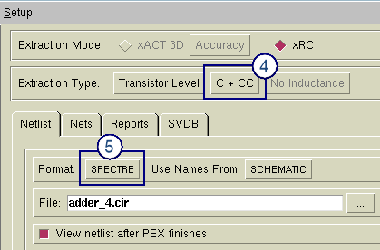

This procedure
only specifies the settings particular to creating a lumped-C Spectre
netlist.
Prerequisites
A
valid PEX rule file for this layout.
Layout
database that is LVS-clean.
For more information refer
to “Basic Extraction Methods”.
Procedure
- Start the PEX interface in
Calibre Interactive.
- Load a runset or rulefile.
- Specify the extraction mode.
Set Extraction Mode to xRC.
- Specify the extraction type.
Click the Outputs button
in the left pane. In the area above the tabs, set Extraction Type
to C + CC.
- Select the Netlist tab, and set the format
to SPECTRE.
Figure 1. Extracting a Lumped
Capacitance Spectre Netlist
- Set other controls as needed.
When ready, click the Run PEX button
in the left pane.
Results
Check the Transcripts pane to verify
the run completed with no errors. If you have selected “View netlist
after PEX finishes” in the Outputs pane, a text viewer appears with
the generated netlist loaded.